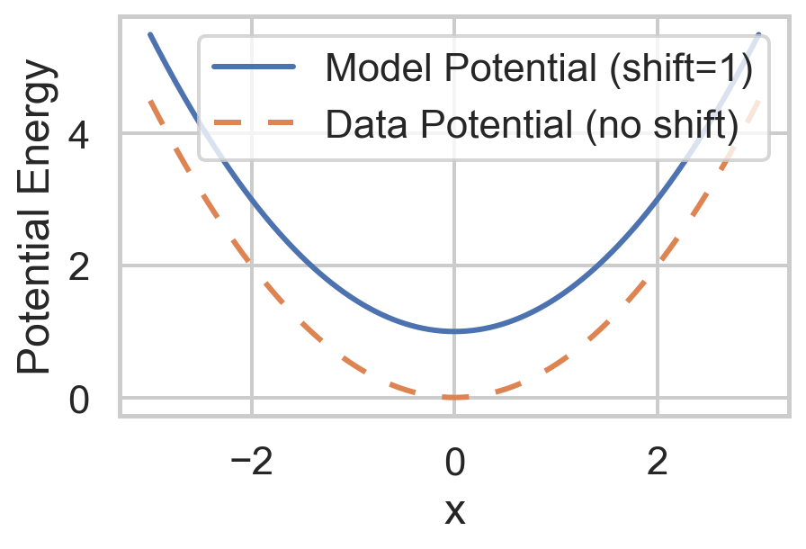
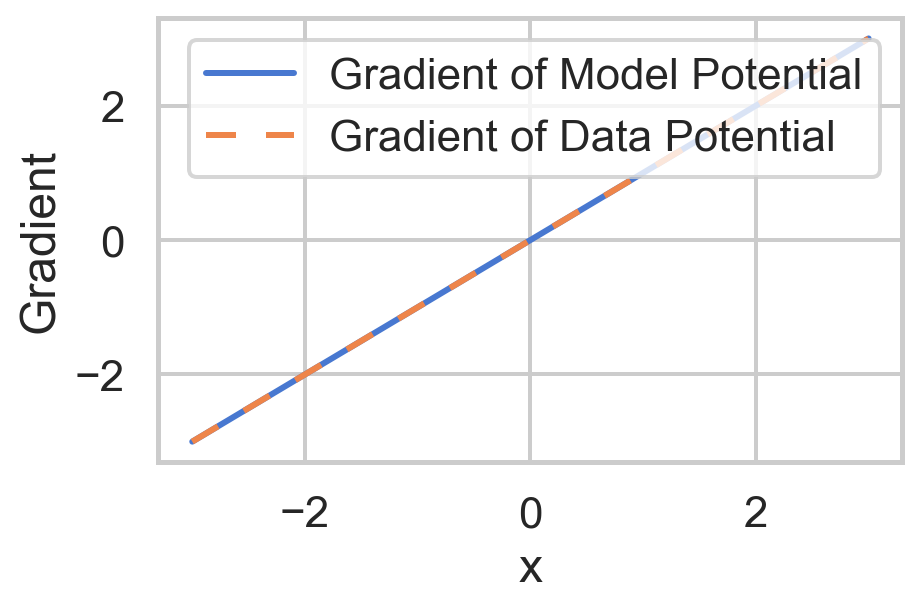

Lecture 11
Score Matching and Diffusion
$$
$$
Score Matching
Previously in Lecture 10, the concept of score as the gradient of the log-likelihood was introduced.
For a probability distribution \(\pi(x, \theta)\) parameterized by \(\theta\), the distribution can be thought of as a potential function \(\phi(x, \theta)\) which is normalized by the partition function \(Z(\theta)\):
\[ \pi(x; \theta) = \underbrace{\frac{1}{Z(\theta)}}_{\text{Partition}} \exp(-\underbrace{\phi(x; \theta)}_{\text{Potential}}) \]
The score is defined as:
\[s(x; \theta) := \nabla_x \log \left(\pi(x)\right) = -\nabla_x \phi(x;\theta)\]
The Big Idea
Score matching was first proposed by Hyvärinen in 2005 (Hyvärinen 2005) as a method to estimate model parameters without computing the partition function \(\frac{1}{Z(\theta)}\), which is often computationally expensive or intractable.
Hyvärinen suggested directly matching the score of the model to the score of the data by minimizing the expected squared difference between them:
\[ \min_\theta \mathbb{E}_{x \sim \pi(x)} \left[ \left\| s_{\theta}(x, \theta) - s_{\text{true}(x)} \right\|^2 \right] \]
Inuitive Explanation
- If the gradients of two potential functions are equal, the functions themselves differ by at most a constant:
\[ \begin{align*} \nabla_x \phi(x; \theta) &= \nabla_x \phi_\text{true}(x) \implies\\ \phi(x; \theta) &= \phi_\text{true}(x) + C \end{align*} \]
Where \(C\) is a constant independent of \(x\). This follows from the fundamental theorem of calculus and is analogous to the principle in physics where two potentials producing the same field differ by a constant.
- Normalization by the partition function \(Z(\theta)\) does not affect the relation between the potentials:
The partition function \(Z(\theta)\) adjusts for any constant differences between the potential functions, ensuring the probability distributions are properly normalized:
\[ \begin{align*} \pi(x) &= \frac{1}{Z(\theta)} \exp(-\phi(x; \theta)) \\ &= \frac{1}{Z(\theta)} \exp(-\phi_\text{true}(x) - C) \\ &= \frac{\exp(-C)}{Z(\theta)} \exp(-\phi_\text{true}(x)) \\ &= \frac{1}{Z_{\text{true}}} \exp(-\phi_\text{true}(x)) \\ \end{align*} \]
The relation between the two functions is preserved by the partition function, which differs by constant \(e^{-C}\) for a difference in potential of \(C\). The probability distributions must be equal, as shown above.
If we can match the score, then we indirectly match the probability distributions without needing to first compute the partition function. This is the idea behind score matching.
Visualization of Score Matching and Potentials
Show the code
import numpy as np
import pandas as pd
import matplotlib.pyplot as plt
import seaborn as sns
# Set the Seaborn style for modern-looking plots
sns.set(style="whitegrid", context="talk")
# Define the potential functions
def potential_model(x, shift=0):
"""Model potential with an optional scalar shift."""
return 0.5 * x**2 + shift # Quadratic potential
def potential_data(x):
"""Data potential."""
return 0.5 * x**2 # Quadratic potential with no shift
# Analytical gradients (scores)
def gradient_potential_model(x):
"""Gradient of the model potential with respect to x."""
return x
def gradient_potential_data(x):
"""Gradient of the data potential with respect to x."""
return x
# Define the range of x values
x = np.linspace(-3, 3, 500)
# Compute potentials
model_potential = potential_model(x, shift=1)
data_potential = potential_data(x)
# Compute gradients (scores)
model_gradient = gradient_potential_model(x)
data_gradient = gradient_potential_data(x)
# Compute partition functions for normalization
dx = x[1] - x[0] # Differential element for integration
Z_model = np.sum(np.exp(-model_potential)) * dx
Z_data = np.sum(np.exp(-data_potential)) * dx
# Compute normalized probability densities
normalized_model = np.exp(-model_potential) / Z_model
normalized_data = np.exp(-data_potential) / Z_data
# Create DataFrames for plotting with Seaborn
df_potentials = pd.DataFrame({
'x': np.tile(x, 2),
'Potential': np.concatenate([model_potential, data_potential]),
'Type': ['Model Potential (shift=1)'] * len(x) + ['Data Potential (no shift)'] * len(x)
})
df_gradients = pd.DataFrame({
'x': np.tile(x, 2),
'Gradient': np.concatenate([model_gradient, data_gradient]),
'Type': ['Gradient of Model Potential'] * len(x) + ['Gradient of Data Potential'] * len(x)
})
df_normalized = pd.DataFrame({
'x': np.tile(x, 2),
'Probability Density': np.concatenate([normalized_model, normalized_data]),
'Type': ['Normalized Model Potential'] * len(x) + ['Normalized Data Potential'] * len(x)
})
figsize = (5, 3)
# Define custom dash patterns
dash_styles = {
'Model Potential (shift=1)': '',
'Data Potential (no shift)': (5, 5), # Solid line
'Gradient of Model Potential': '',
'Gradient of Data Potential': (5, 5),
'Normalized Model Potential': '',
'Normalized Data Potential': (5, 5)
}
plt.figure(figsize=figsize)
# Plot potentials
sns.lineplot(
data=df_potentials,
x='x',
y='Potential',
hue='Type',
style='Type',
dashes=dash_styles,
palette='deep',
)
plt.xlabel('x')
plt.ylabel('Potential Energy')
plt.legend(title='')
plt.show()
plt.figure(figsize=figsize)
# Plot gradients (scores)
sns.lineplot(
data=df_gradients,
x='x',
y='Gradient',
hue='Type',
style='Type',
dashes=dash_styles,
palette='muted',
)
plt.xlabel('x')
plt.ylabel('Gradient')
plt.legend(title='')
plt.show()
plt.figure(figsize=figsize)
# Plot normalized probability densities
sns.lineplot(
data=df_normalized,
x='x',
y='Probability Density',
hue='Type',
style='Type',
dashes=dash_styles,
palette='bright',
)
plt.xlabel('x')
plt.ylabel('Probability Density')
plt.legend(title='')
plt.show()


Eliminating True Score
The score for the data \(s_{\text{true}}\) is unknown, but it can be eliminated using calculus tricks, as shown in (Hyvärinen 2005). The expected squared difference can be rewritten as:
\[ \begin{align*} & \ \min_\theta \mathbb{E} \frac{1}{2} \left[ \left\| s_{\theta}(x, \theta) - s_{\text{true}}(x) \right\|^2 \right] \\ &= \min_\theta \frac{1}{2} \int_\Omega \left\| s_{\theta}(x, \theta) - s_{\text{true}}(x) \right\|^2 \pi(x) \, dx \\ &= \min_\theta \frac{1}{2} \int_\Omega \left\| s_{\theta}(x, \theta) \right\|^2 \pi(x) \, dx - \int_\Omega s_{\theta}(x, \theta)^\intercal s_{\text{true}}(x) \pi(x) \, dx + \frac{1}{2} \int_\Omega \left\| s_{\text{true}}(x) \right\|^2 \pi(x) \, dx \\ \end{align*} \]
But \(\|s_{\text{true}}\|\) is a constant since it is not a variable that can be changed, it can be discarded from the minimization problem:
\[ \begin{align*} &= \min_\theta \frac{1}{2} \int_\Omega \left\| s_{\theta}(x, \theta) \right\|^2 \pi(x) \, dx - \int_\Omega s_{\theta}(x, \theta)^\intercal s_{\text{true}}(x) \pi(x) \, dx \\ \end{align*} \]
To eliminate \(s_{\text{true}}\), the definition of score can be used to rewrite the term:
\[ \begin{align*} & \ -\int_\Omega s_{\theta}(x, \theta)^\intercal s_{\text{true}}(x) \pi(x) \, dx\\ &= -\int_\Omega \pi(x) \left(\nabla_x \log(\pi(x))\right)^\intercal s_\theta(x; \theta) \, dx \\ & = -\int_\Omega \frac{\pi(x)}{\pi(x)}\left(\nabla_x \pi(x)\right)^\intercal s_\theta(x; \theta) \, dx \\ & = -\int_\Omega \nabla_x \pi(x)^\intercal s_\theta(x; \theta) \, dx \\ \end{align*} \]
Integration by parts allows for the gradient term to be swapped to the score term. If we assume that the probability of the true distribution goes to zero \(\pi(x) \rightarrow 0\) at the boundaries \(\partial \Omega\), then the flux integral boundary term from integration by parts vanishes. When working with integration by parts in multivarible calculus, the gradient \(\nabla\) and negative divergence \(-\nabla \cdot\) opeartors are adjoints of each other, \(\nabla = (-\nabla \cdot)^\intercal\). This allows for the gradient to be swapped to the score term:
\[ \begin{align*} & = -\int_\Omega \nabla_x \pi(x)^\intercal s_\theta(x; \theta) \, dx \\ &= -\int_{\partial \Omega} \pi(x) s_\theta(x; \theta) \cdot dx + \int_\Omega \pi(x) \nabla_x \cdot s_\theta(x; \theta) \, dx \\ &= \int_\Omega \pi(x) \nabla_x \cdot s_\theta(x; \theta) \, dx \\ \int_\Omega s_{\theta}(x, \theta)^\intercal s_{\text{true}}(x) \pi(x) \, dx &= \int_\Omega \pi(x) \nabla_x^2 \phi(x;\theta) \, dx \\ \end{align*} \]
Back to the minimization problem, this term can be substituted back in:
\[ \begin{align*} & \ \min_\theta \mathbb{E}_{x \sim \pi(x)} \frac{1}{2} \left[ \left\| s_{\theta}(x, \theta) - s_{\text{true}(x)} \right\|^2 \right]\\ &= \min \frac{1}{2} \int_\Omega \left\| \nabla_x \phi(x;\theta) \right\|^2 \pi(x) \, dx + \int_\Omega \pi(x) \nabla_x^2 \phi(x;\theta) \, dx \\ &= \min_{theta} \mathbb{E}_{x \sim \pi(x)} \left[ \left\| \nabla_x \phi(x;\theta) \right\|^2 + \nabla_x^2 \phi(x;\theta) \right] \\ \end{align*} \]
Evaluation of the Objective
The minimization objective does not require using the true score which has been eliminated. The \(\nabla_x^2 \phi(x;\theta)\) term can be evaluated as the trace of the Hessian matrix of the potential function \(\phi(x;\theta)\):
\[ \nabla_x^2 \phi(x;\theta) = \text{Tr} \left( \nabla_x^2 \phi(x;\theta) \right) = \sum_i \frac{\partial^2 \phi(x;\theta)}{\partial x_i^2} \]
This component places a penalty on positive curvature in the potential function, preferring highly negative curvature in regions of high probability density, similar to a Gaussian or peaked distribution. It can be though of as a regularization term that prefers peaked distributions.
The \(\left\| \nabla_x \phi(x;\theta) \right\|^2\) term is the squared norm of the gradient, which penalizes large gradients. With this term alone, the optimal distribution would be as flat as possible to make the gradient as small as possible. It is the opposition of the minimization objective of the two terms that leads to a balanced and matched distribution.
In practice, we can estimate the true expectation over all \(x\) by sampling from the model distribution. Once such way is to use the empiral samples \(\{x_1, x_2, \ldots, x_N\}\) to estimate the expectation. If they are assumed to be i.i.d. samples from the model distribution, the expectation can be approximated as:
\[ \begin{align*} \mathbb{E}_{x \sim \pi(x)} \left[ \left\| \nabla_x \phi(x;\theta) \right\|^2 + \nabla_x^2 \phi(x;\theta) \right] &\approx \frac{1}{N} \sum_{i=1}^N \left\| \nabla_x \phi(x_i;\theta) \right\|^2 + \nabla_x^2 \phi(x_i;\theta) \\ \end{align*} \]
This can be applied to all samples, or batches of samples to get a gradient estimate for the minimization objective in \(\theta\):
\[ \begin{align*} g &\approx \nabla_\theta \left[ \frac{1}{N} \sum_{i=1}^N \left\| \nabla_x \phi(x_i;\theta) \right\|^2 + \nabla_x^2 \phi(x_i;\theta) \right] \\ \end{align*} \]
Computing the Laplacian
The Laplacian of the potential function \(\phi(x;\theta)\) can be computed as the trace of the Hessian matrix of the potential function:
\[ \begin{align*} \nabla_x^2 \phi(x;\theta) &= \text{tr} \left( \nabla_x^2 \phi(x;\theta) \right) \\ &= \sum_i \frac{\partial^2 \phi(x;\theta)}{\partial x_i^2} \end{align*} \]
The trace of a matrix such as a Hessian which is a linear operator can be estimated without having to know the explicit matrix. For example the Hessian may be an operator that is too large to store in memory. Or the Hessian may not be explicitly known, but the operation \(Hx\) can be computed for example.
A process first proposed by Hutchinson (Hutchinson 1990), known as randomized linear algebra allows for computing the trace when only the \(H(x)\) operation is known. A random varible is used to sample as follows:
\[ \begin{align*} \text{tr} \left(A\right) &= \text{tr} \left(AI\right) \\ &= \text{tr} \left( A \mathbb{E}_{x\sim\mathcal{N}(0,I)} x x^\intercal \right)\\ &= \mathbb{E}_{x\sim\mathcal{N}(0,I)} \text{tr} \left( A x x^\intercal \right)\\ &= \mathbb{E} \text{tr} \left(x^\intercal A x \right)\\ &\approxeq \frac{1}{N} \sum_{i=1}^N x_i^\intercal A x_i \end{align*} \]
The normal distribution by definition has a covariance matrix that is identity \(I\) so the expectation of the outer product of the random variable \(x\) is the identity matrix. Other random variables can be used as well, further details on the process can be found in Bai, Fahey, and Golub (Bai, Fahey, and Golub 1996).
Applications of Learned Score
MAP Estimation
Now that we have a method to learn the score of a distribution, it can be used as the regularization term of the gradient in MAP estimation. In Lecture10, the score was used as part of the MAP minimization gradient.
So using many empirically drawn samples \(x_i\), the \(\pi(x)\) distribution can be indirectly estimated using score matching, learning the score \(s(x, \theta)\). The learned score can then be used for the gradient of the MAP estimation problem, where it is representative of the regularization term, informed by the prior distribution \(\pi(x)\). In the case of a matrix operator for the forward problem \(F(x) = Ax\), its Jacobian \(J(x)\) is the same as the matrix operator \(J(x) = A\).
Diffusion Models and Homotopy
In Lecture 7, the concept of a homotopy beteween two functions was introduced. A homotopy provides a continuous path between an smoothing function \(g(x)\) and a target function \(f(x)\), parameterized by a scalar \(t\). In the case of a gaussian smoothing function \(g(x)\), \(t\) acts as a variance parameter: \[ h(x, t) = t f(x) + (1-t) g(x) \]
Proposition: Convolution of Random Variables
The sum of two independent random variables is a convolution of their probability distributions. If \(X \sim \pi_x(x)\) and \(Y \sim \pi_y(y)\), then the sum \(W = X + Y\) has a probability distribution \(\pi_w(w)\) that is the convolution of the two distributions:
\[ \begin{align*} \pi_w(w) &= \int \pi_x(x) \pi_y(z-x) \, dx \\ \end{align*} \]
For a dataset \(x\sim \pi(x)\) and a latent variable \(z\sim \mathcal{N}(0, I)\), then define a new random variable \(x_t\) that is the sum of the two variables:
\[ x_t = \sqrt{t}x + \sqrt{1-t} z \]
The homotopy proceeds slightlt differently with the time scheduling but it still begins and ends with the starting and target distributions. This new random variable \(x_t\) will be the convolution of the two distributions, such that \(\pi_{x_t}(x_t)\) is the convolution of \(t \pi(x)\) and \(\mathcal{N}(0, (1-t)I)\):
\[ \pi(x_t) = \int \pi(x-\frac{\xi}{t}) \exp\left(-\frac{\|\xi\|^2}{2(1-t)}\right) \, d\xi \]